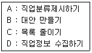
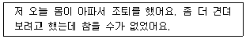
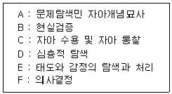
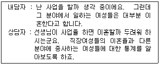
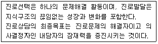
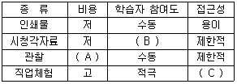
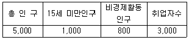

직업상담사-2급(구) (2009-07-26 기출문제)
1과목: 직업상담ㆍ심리학
1. 일반적인 직업정보 수집과정을 바르게 나열한 것은?

- A→ B → C → D
- B → A → D → C
- D→ C → B → A
- C → B → A → D
(정답률: 59%)

2. 직업상담사는 각종 심리검사가 특정 집단에 불리하고 편파적으로 사용되지 않도록 노력할 의무가 있다. 다음중 그런 노력으로서 적절하지 않은 것은?
- 하나의 검사에만 의존하지 않고 여러 방법들을 평가하여 결과의 일치성을 확인한다.
- 검사에 대한 경험과 자기표현 동기가 부족한 수검자에 대한 래포 형성에 노력한다.
- 규준집단의 특성 및 표집방법을 잘 파악하여 결과를 해석한다.
- 편파에 의해서 불이익을 당할 가능성이 있는 대상은 사전에 검사대상에서 제외시킨다.
(정답률: 70%)
3. 초기 면담의 주요 요소 중 내담자에게 선정된 행동을 연습하거나 실천토록 함으로써 내담자가 계약을 실행하는 기회를 최대로 도울 수 있는 요소는?
- 리허설
- 계약
- 감정이입
- 유머
(정답률: 65%)
4. Maslow의 동기위계설에서 가장 상층에 존재하는 동기는 무엇인가?
- 자존감
- 소속감
- 안전
- 자아실현
(정답률: 68%)
5. 직업상담의 중재(intervention)와 관련된 다음 단계들 중 “6개의 생각하는 모자(six thinking hats)" 기법은 무엇을 위한 것인가?
- 직업정보의 수집
- 의사결정의 촉진
- 보유기술의 파악
- 시간관의 개선
(정답률: 68%)
6. 직업상담사의 윤리강령에 대한 설명으로 틀린 것은?
- 상담자는 상담에 대한 이론적, 경험적 훈련과 지식을 갖춘 것을 전제로 한다.
- 상담자는 내담자의 성장, 촉진과 문제해결 및 방안을 위해 시간과 노력상의 최선을 다한다.
- 상담자는 자신의 능력 및 기법의 한계에도 불구하고 최선을 다하여 내담자를 끝까지 책임을 지도록 한다.
- 상담자는 내담자가 이해, 수용할 수 있는 한도 내에서 기법을 활용한다.
(정답률: 79%)
7. 개인의 진로결정 요인 중 내재적 요인에 속하지 않는 것은?
- 연령
- 능력
- 신체적 조건
- 가족 구성원
(정답률: 59%)
8. Bordin의 정신 역동적 직업 상담에서 사용하는 기법이 아닌것은?
- 명료화
- 비교
- 소망-방어 체계
- 감정에 대한 준 지시적 반응 범주화
(정답률: 69%)
9. 포괄적 직업상담 프로그램은 여러 직업상담 이론들과 일반상담 이론들이 갖는 장점들을 서로 절충하고 단점들을 보완하여 일관성 있는 체계로 통합시키기 위하여 Crites가 제안한 프로그램이다. 이 포괄적 직업상담 프로그램의 문제점은?
- 직업결정 문제의 원인으로 불안에 대한 이해와 불안을 규명하는 방법이 결여되어 있다.
- 직업상담의 문제 중 진학상담과 취업상담에 적합할 뿐 취업 후 직업적응 문제들을 깊이 있게 다루지 못하고 있다.
- 직업선택에 미치는 내적 요인의 영향을 지나치게 강조한 나머지 외적 요인의 영향에 대해서는 충분하게 고려하고 있지 못하다.
- 직업상담사가 교훈적 역할이나 내담자의 자아를 명료화하고 자아실현을 시킬 수 있는 적극적 태도를 취하지 않는다면 내담자에게 직업에 대한 정보를 효과적으로 알려줄 수 없다.
(정답률: 77%)
10. 다음 중 정신분석적 상담 과정에 관한 설명으로 가장 적합하지 않은 것은?(오류 신고가 접수된 문제입니다. 반드시 정답과 해설을 확인하시기 바랍니다.)
- 심리적 장애의 근원을 과거 경험에서 찾고자 한다.
- 내담자의 유아기적 갈등과 감정을 중요하게 다룬다.
- 내담자의 무의식적 자료와 방어를 탐색하는 작업을 한다.
- 심리적 장애행동과 관련된 학습 경험들을 확인하고 이를 수정한다.
(정답률: 19%)
11. 다음 내담자의 진술에 대해 가장 수준이 높은 수용적 존중 반응은 어떤 것인가?

- 아플 땐 쉬어야지 건강해야 일도 잘 할 수 있지.
- 그래, 자네니깐 그만큼이나 참았지. 자네 웬만하면 조퇴하지 않는 거 알지.
- 몸이 조금 아프다고 자꾸 조퇴하면 안 되지.
- 몸이 아프면 힘들지. 그동안 좀 무리했지.
(정답률: 56%)
12. Super가 제시한 발달적 직업상담 단계를 바르게 나열한 것은?

- A→ B → C → D → E → F
- A→ D → C → B → E → F
- A→ C → B → D → E → F
- A→ B → D → C → E → F
(정답률: 64%)
13. 다음의 면담에서 직업상담자가 택한 개입의 방법은?

- 구체화 시키기
- 논리적 분석
- 격려
- 재구조화
(정답률: 81%)
14. 정신역동적 직업상담을 구체화한 Bordin이 제시한 직업상담의 3단계 과정이 아닌것은?
- 관계설정
- 탐색과 계약설정
- 핵심결정
- 변화를 위한 노력
(정답률: 61%)
15. 면접 중의 효과적인 질문형태에 관한 설명과 가장 거리가 먼 것은?
- “왜”라는 질문은 가능한 한 피한다.
- 직접적인 질문보다는 간접적인 질문이 더 좋다.
- 질문은 가능한 한 개방적이어야 한다.
- 이중질문을 통해 내담자에게 양자를 택일하게 하는 선택권을 준다.
(정답률: 67%)
16. 행동주의 상담에서 내적인 행동변화를 촉진시키는 방법이 아닌것은?
- 체계적둔감법
- 근육이완훈련
- 인지적 모델링과 사고정지
- 상표제도
(정답률: 73%)
17. 진로상담에서 면접기법에 관한 설명으로 틀린 것은?
- 특성-요인 상담자는 내담자의 인지적 측면에 주로 관여하며 면접에서 주도적 역할을 한다.
- 상담자의 공감, 무조건적인 수용, 진실성을 특별히 강조하는 상담모델은 행동주의적 상담이다.
- 명료화, 비교, 소망-방어 체계에 대한 해석 등의 면접 기술이 주로 사용되는 모델은 정신역동적 상담이다.
- 발달적 상담에서는 내담자의 이성적 측면과 정서적 측면 모두에 관심을 가지고 지시적·비지시적 면접기술을 사용한다.
(정답률: 64%)
18. 모든 내담자는 공통적으로 자기와 경험의 불일치로 인해서 고통을 받고 있기 때문에, 직업상담 과정에서 내담자가 지니고 있는 직업문제를 진단하는 것 자체가 불필요하다고 보는 직업상담 접근방법은?
- 내담자 중심 직업상담
- 특성-요인 직업상담
- 정신 역동적 직업상담
- 행동주의 직업상담
(정답률: 56%)
19. 직업상담의 상담목표 설정에 관한 설명으로 가장 적합한 것은?
- 상담목표 설정은 상담전략 및 개입의 선택과 관련이 없다.
- 하위목표들을 명확히 하여 가능한 구체적으로 설정되어야 한다.
- 내담자 기대나 가치와 어긋나더라도 상담자의 전문가적인 식견에 따라 설정되어야 한다.
- 현실적이기보다 가능한 궁극적인 변화를 가져올 수 있는 원대한 목표이어야 한다.
(정답률: 63%)
20. Crites의 직업상담의 문제 유형 중 가능성이 많아서 흥미를 느끼는 직업들과 적성에 맞는 직업들 사이에서 결정을 내리지 못하는 것은?
- 다재다능형
- 우유부단형
- 불충족형
- 비현실형
(정답률: 66%)
21. 다음중 직무분석을 통해 작성되는 결과물로서, 해당직무를 수행하는 작업자가 갖추어야 할 자격요건을 기록한 것은 무엇인가?
- 직무 기술서(job description)
- 직무 명세서(job specification)
- 직무 프로파일(job profile)
- 직책 기술서(position description)
(정답률: 62%)
22. 다음 중 구직자의 인지적 능력을 측정할 수 있는 검사는?
- 5요인 성격 검사
- 일반 적성 검사
- 직업선호도 검사
- 다면적 인성 검사
(정답률: 35%)
23. 직업지도 프로그램을 선정할 때 고려해야 할 사항이 아닌 것은?
- 활용하고자 하는 목적에 부합하여야 한다.
- 실시가 어렵더라도, 효과가 뚜렷한 프로그램이어야 한다.
- 프로그램의 효과를 평가할 수 있어야 한다.
- 활용할 프로그램은 비용이 적게 드는 경제성을 지녀야 한다.
(정답률: 54%)
24. 직무 스트레스(job Stress)에 대한 대처 방안의 하나로 이솝우화에 나오는 여우와 신포도(sour-grape) 이야기처럼 생각하는 것은?
- 투사(projection)
- 억압(repression)
- 합리화(rationalization)
- 주지화(intellectualization)
(정답률: 64%)
25. Holland의 흥미에 관한 육각모형에서 개인의 흥미에 관한 6가지 선호유형에 해당되지 않는 것은?
- 현실형
- 예술형
- 관습형
- 이상형
(정답률: 65%)
26. Locke와 Latham이 주장한 목표설정이론(goal-setting theory)에 관한 설명으로 틀린 것은?
- 어려운 목표가 더 높은 수준의 직무수행을 가져온다.
- 목표에 대한 몰입이 목표의 난이도에 비례한다.
- 목표가 일반적일수록 개인은 그것을 추구하기 위해 더 노력한다.
- 개인이 과업수행에 대하여 피드백을 받는 것이 중요하다.
(정답률: 46%)
27. 다음 중 심리검사의 표준화과정에서 타당도의 기준이 될 수 없는 것은?
- 어떤 준거에 의한 것이며 그것은 합리적인가?
- 문항제작이 잘 되어 있으며, 행동증거의 수집이 적합한가?
- 사용된 표본집단의 크기는 적절한가?
- 검사전문가가 그 도구에 대하여 어떤 의견을 가지고 있는가?
(정답률: 36%)
28. 다음 중 직무분석의 단계를 올바르게 나열한 것은?
- 직업분석 → 직무분석 → 작업분석
- 작업분석 → 직무분석 → 직업분석
- 작업분석 → 직업분석 → 직무분석
- 직업분석 → 작업분석 → 직무분석
(정답률: 52%)
29. 다음은 진로발달에 관한 어떤 이론의 주장인가? (09-03, 04-03)

- 사회인지적 진로이론
- 인지적 정보처리적 진로이론
- 가치중심적 진로이론
- 자기효능감 중심의 진로이론
(정답률: 50%)
30. 프리드먼과 로젠만은 관상동맥성 심장병을 특정 성격과 관련되어 있다고 주장한다. 짧은 시간내에 더 많은 일을 하려하고, 지칠 줄 모르는 노력을 경주하는 특징을 가진 성격은?
- A형 성격
- B형 성격
- O형 성격
- AB형 성격
(정답률: 61%)
31. 종업원의 경력 개발을 위하여 일반적으로 2-3일간에 걸쳐 지필 검사, 면접, 리더 없는 집단토의, 경영 게임 등 다양한 형태의 연습을 실습을 통해 한 뒤 전문가에게 개인 능력, 성격, 기술 등에 대해 종합적인 평가를 받는 프로그램은 무엇인가?
- 평가기관(assessment center)
- 경력자원기관(career resource center)
- 경력워크셥(career workshop)
- 경력연습책자(career workbook)
(정답률: 52%)
32. 수퍼(Super)의 직업발달이론의 기본가정이 아닌 것은?
- 개인은 능력, 흥미, 성격에 있어서 각기 차이점을 가지고 있다.
- 개인은 각각에 적합한 직업적 능력을 가지고 있다.
- 직업발달은 주로 대인관계를 발달시키고 실천해 나가는 과정이다.
- 각 직업군에는 그 직업에 요구되는 능력, 흥미, 성격특성이 있다.
(정답률: 50%)
33. 다음 중 성격검사가 아닌 것은?
- MMPI
- WISC
- MBTI
- 16PF
(정답률: 49%)
34. 다음 중 미네소타 직업분류체계Ⅲ와 관련되어 발전된 이론은?
- Ginzberg의 발달이론
- Super의 평생발달이론
- Lofquist와 Dawis의 직업적응이론
- Roe의 욕구이론
(정답률: 63%)
35. 심리검사 문항형식으로 제한형(restricted)을 사용하는 이유에 관한 설명으로 가정 적합한 것은?
- 피검자의 투사적 반응을 유도하기 위해 사용한다.
- 피검자가 반응하는 과정을 관찰하고 분석하고자 할 때 사용한다.
- 제작이 용이하고 추측에 의한 응답을 방지하기 위해 사용한다.
- 신뢰도가 높으며 광범위한 영역에서 문항을 추출하고자 할 때 사용한다.
(정답률: 49%)
36. 지능검사 점수와 학교에서의 성적간의 상관계수가 0.30일때 이에 대한 설명으로 옳은 것은?
- 지능검사를 받은 학생들 중 30%가 높은 학교성적을 받을 것이다.
- 지능검사를 받은 학생들 중 9%가 높은 학교성적을 받을 것이다.
- 학교에서의 성적에 관한 변량의 9%가 지능검사에 의해 설명될 것이다.
- 학교에서의 성적에 관한 변량의 30%가 지능검사에 의해 설명될 것이다.
(정답률: 45%)
37. 진로시간 전망검사 중 Cottle의 원형검사에 기초한 시간전망개입은 3가지 국면으로 구분할 수 있다. 이들 중 미래를 현실처럼 느끼게 하고 미래계획에 대한 정적인 태도를 강화시키며 목표설정을 신속하게 하는 것을 목표로 하는 것은?
- 방향성
- 변별성
- 통합성
- 개별성
(정답률: 52%)
38. 다음 중 특성-요인이론에 관한 설명으로 틀린 것은?
- “직업과 사람을 연결시키기”라는 심리학적 관점을 대표한다.
- 직업선택 과정이 개인의 아동기부터 초기 성인기까지의 사회-문화적 환경에 따라 주관적으로 발달된다고 본다.
- 특성-요인 직업상담에 있어서 상담자의 역할은 교육자의 역할이다.
- 미네소타대학의 직업심리학자들이 이 이론에 근거한 각종 심리검사를 제작하였다.
(정답률: 47%)
39. 직업적성검사(GATB)에서 사무지각적성(clerical perception)을 측정하기 위한 검사는?
- 표식검사
- 계수검사
- 명칭비교검사
- 평면도 판단검사
(정답률: 52%)
40. 스트레스 요인의 역할갈등 중 직업에서의 요구와 직업이외의 요구 간의 갈등에서 발생하는 것은?
- 개인내 - 역할갈등
- 개인간 - 역할갈등
- 송신자내 갈등
- 송신자간 갈등
(정답률: 37%)
2과목: 직업정보론(노동시장론 포함)
41. 워크넷에 수록되어 있지 않은 외국 직업전망서는?
- 미국전망서
- 일본전망서
- 캐나다전망서
- 영국전망서
(정답률: 12%)
42. 다음 고용안정사업 중 고용조정지원에 해당하지 않는 것은?
- 휴업지원금
- 휴직지원금
- 재고용장려금
- 육아휴직장려금
(정답률: 30%)
43. 한국직업사전(2009)에 수록된 용어설명으로 틀린 것은?
- 자료 - 자료와 관련된 기능은 만질 수 없으며 숫자, 단어, 기호, 생각, 개념 그리고 구두상 표현을 포함한다.
- 조사연도 - 조사연도의 명기는 직업사전 수요자들에게 조사시점과 사용시점의 차이에서 오는 직업정보의 오해를 제거하기 위해 제시되며 해당직업의 최초 조사연도이다.
- 육체활동 - 해당 직업의 직무를 수행하기 위해 필요한 신체적 능력을 나타내는 것으로 균형감각, 웅크림, 손, 언어력, 청각, 시각 등이 요구되는 육체활동인지 여부를 나타낸다.
- 작업강도 - 해당 직업의 직무를 수행하는데 필요한 육체적 힘의 강도를 나타낸 것으로 심리적, 정신적 노동강도는 고려하지 않는다.
(정답률: 36%)
44. 직업정보를 정보의 생산 및 운영 주체에 따라 민간직업정보와 공공직업정보로 구분할 때 공공직업정보의 특성이 아닌 것은?
- 지속적으로 조사 분석하여 제공되며 장기적인 계획 및 목표에 따라 정보체계의 개선작업 수행이 가능
- 전체 산업 및 업종에 걸친 직종을 대상으로 한다.
- 조사 분석 및 정리, 제공에 상당한 시간 및 비용이 소요되므로 유료로 제공한다.
- 직업별로 특정한 정보만을 강조하지 않고 보편적인 항목으로 이루어진 기초적인 직업정보체계로 구성된다.
(정답률: 47%)
45. 워크넷에서 제공하는 직업선호도검사 L형의 하위검사가 아닌것은?
- 흥미검사
- 성격검사
- 작업강도생활사검사
- 구직취약성적응도검사
(정답률: 52%)
46. 전직실업자훈련, 여성가장실업자 훈련생에게 지급되는 식비는 얼마인가?
- 월 4만원
- 월 5만원
- 월 6만원
- 월 7만원
(정답률: 44%)
47. 한국직업전망(2009)에 관한 설명으로 틀린 것은?
- 진로와 직업을 결정하고자 하는 청소년이나 일반구직자들이 다양한 직업정보를 살펴보고 자신에게 맞는 직업을 선택할 수 있도록 도움을 주기 위해 기획되었으며 우리나라를 대표하는 16개 분야 186개 직종에 대한 상세정보를 수록하고 있다.
- 하는 일, 근무환경, 되는 길, 필요한 적성과 흥미 및 향후 3년간 수록직업에 대한 전망을 제공함으로써 각 직업에 대한 상세한 정보를 얻을 수 있도록 구성되었다.
- 수록직업은 한국고용직업분류(KECO)에 근거하여 종사자 수 및 직업분포도, 청소년 및 구직자의 직업선호도, 직업정보 제공의 가치에 대한 전문가 의견을 반영하여 선정하였다.
- 한국고용직업분류(KECO)의 세분류 직업 426개 가운데 승진이나 장기간의 경력개발을 통해 진입을 하게 되는 관리직에 해당하는 직업군은 제외하였다.
(정답률: 49%)
48. 다음 중 종목폐지로 인해 2009년도에 시행되지 않는 국가기술자격은?
- 철도운송기능사
- 귀금속가공기능사
- 궤도장비정비기능사
- 수치제어선반기능사
(정답률: 32%)
49. 건설기계기사, 공조냉동기계기사, 용접기사 자격이 공통으로 해당되는 직무분야는?
- 건축분야
- 토목분야
- 기계분야
- 전자분야
(정답률: 49%)
50. 통계청의 경제활동인구조사에서 취업자에 대한 설명으로 틀린 것은?
- 임시근로자 - 고용계약기간이 1개월 이상 1년 미만인 자
- 일용근로자 - 임금 또는 봉급을 받고 고용되어 있으나 고용계약기간이 3개월 미만인자
- 자영업주 - 사업규모에 상관없이 한 사람 이상의 유급 고용원을 두거나(고용주), 유급종업원 없이 자기 혼자 또는 무급가족종사자와 함께 일을 하는 자(자영자)
- 무급가족종사자 - 자기가족의 일원이 경영하는 사업체에서 일정한 보수 없이 주당 18시간 이상 일한 자
(정답률: 42%)
51. 한국고용정보원에서 발행하는 워크넷 구인·구직 및 취업 동향에 수록된 용어해설에 관한 설명으로 틀린 것은?
- 신규구직자수 - 해당 월에 워크넷에 등록된 구직자 수
- 제시임금 - 구직자가 구인업체에 요구하는 임금
- 시간제 - 그 사업장에서 근무하는 통산상의 근로자보다 짧은 시간을 근로하게 하는 고용
- 구인배수 - 신규구인인원/신규구직자 수
(정답률: 40%)
52. 국가기술자격 서비스분야의 소비자전문상담사 1급의 응시자격으로 틀린 것은?
- 해당종목의 2급 자격취득 후 소비자상담 실무경력이 2년 이상인자
- 소비자상담 관련 실무경력 5년 이상인 자
- 대학졸업자 등으로서 졸업 후 응시하고자 하는 종목이 속하는 동일직무분야에서 3년 이상 종사한 자
- 외국에서 동일한 종목에 해당하는 자격을 취득한 자
(정답률: 21%)
53. 직업선택 결정모형을 기술적 직업결정모형과 처방적 직업결정모형으로 분류할 때 기술적 직업결정모형에 해당하지 않는 것은?
- 브룸의 모형
- 힐튼의 모형
- 카츠의 모형
- 타이드만과 오하라의 모형
(정답률: 49%)
54. 한국표준산업분류(2008)의 적용원칙으로 틀린 것은?
- 생산단위는 산출물 뿐만 아니라 투입물과 생산공정 등을 함께 고려하여 그들의 활동을 가장 정확하게 설명된 항목에 분류해야 한다.
- 복합적인 활동단위는 우선적으로 최상급 분류단계(대분류)를 정확히 결정하고 순차적으로 중, 소, 세, 세세분류 단계 항목을 결정해야 한다.
- 수수료 또는 계약에 의하여 활동을 수행하는 단위는 자기계정과 자기 책임하에서 생산하는 단위와 동일항목에 분류되어야 한다.
- 동일단위에서 제조한 제화의 소매활동은 별개 활동으로 파악하여 그 주된 활동에 따라 분류되어야 한다. 그러나 자기가 생산한 재화와 구입한 재화를 함께 판매한다면 제조활동으로 분류한다.
(정답률: 50%)
55. 한국표준산업분류(2008)의 단일 장소에서 이루어지는 단일 산업활동의 통계 단위는?
- 기업집단
- 사업체단위
- 활동유형단위
- 지역단위
(정답률: 40%)
56. 직업정보 가공 시 유의사항으로 틀린 것은?
- 직업은 그 분야에서 매우 전문적이므로 전문적인 지식이 없어도 이해할 수 있는 언어로 가공한다.
- 직업에 대한 장·단점을 편견 없이 제공한다.
- 현황은 가장 최신의 자료를 활용하되, 표준화된 정보를 활용한다.
- 시청각 효과를 부여하면 혼란이 발생되기 때문에 가급적 삼간다.
(정답률: 52%)
57. 한국직업정보시스템에서 제공하는 학과정보 중 의약계열에 해당하는 학과가 아닌 것은?
- 수의예과
- 한의학과
- 임상병리과
- 치기공과
(정답률: 40%)
58. 한국직업사전(2009)의 부가직업정보중 작업환경에 대한 설명으로 틀린것은?
- 작업환경은 해당직업의 직무를 수행하는 작업원에게 직접적으로 물리적, 신체적 영향을 미치는 작업장의 환경요인을 나타낸 것이다.
- 작업환경의 측정은 작업자의 반응을 배제하고 조사자가 느끼는 신체적 반응으로 판단한다.
- 작업환경은 저온·고온·다습·소음·진동·위험내재·대기환경으로 구분한다.
- 작업환경은 사업체의 규모와 특성에 따라 그리고 동일 사업체의 경우에도 작업장마다 달라질 수 있으므로 절대적인 기준이 될 수 없다.
(정답률: 49%)
59. 다음 직업정보 유형별 장단점에 관한 표의 ( )안에 들어갈 알맞은 것은?

- A - 고, B - 적극, C - 용이
- A - 고, B - 수동, C - 제한적
- A - 저, B - 적극, C - 제한적
- A - 저, B - 수동, C - 용이
(정답률: 40%)
60. 한국표준직업분류에서 직업을 분류하는 기준은?
- 직무와 직종
- 직무와 직능
- 직무와 자격
- 직능과 직종
(정답률: 49%)
61. 다음 중 직능급에 관한 설명으로 틀린 것은?
- 동기부여의 효과가 미약하다.
- 근속에 따른 동일한 직능자격 등급을 부여받을 수 있어 노사공동체 형성에 기여할 수 있다.
- 직능파악과 평가방법에 어려움이 많다.
- 제도운용에 미숙할 경우 연공본위가 될 우려가 있다.
(정답률: 46%)
62. 다음 중 노동시장의 유연화(flexible labor market)와 관련 있는 제도는?
- 변형근로시간제
- 주 5일 근무제
- 연공서열제
- 생산성임금제
(정답률: 44%)
63. 다음 표를 이용하여 실업률을 계산하면 얼마인가?

- 6.12%
- 6.25%
- 6.33%
- 6.41%
(정답률: 50%)
64. 다음 중 임금의 법적 성격에 관한 학설의 하나인 노동대가설로 설명할 수 있는 임금은?
- 직무수당
- 휴업수당
- 휴직수당
- 가족수당
(정답률: 53%)
65. 다음 중 고용조건의 결정은 전적으로 노사의 실력항쟁에 의하여 결정되고 모든 노사의 주도권 획득을 위한 대립적 성격을 가진 노사관계 유형은?
- 산업민주적 노사관계
- 정치적 노사관계
- 가부장적 노사관계
- 억압적 노사관계
(정답률: 44%)
66. 필립스곡선은 어떤 변수 간의 관계를 설명하는 것인가?
- 임금상승율과 노동참여율
- 경제성장율과 실업율
- 환율과 실업율
- 임금상승율과 실업율
(정답률: 44%)
67. 다음 중 근속연수에 따라 승급액이 일정하며 승급률은 체감하는 연공급의 형태는?
- 정기승급형
- 체증승급형
- 체감승급형
- S자형 승급형
(정답률: 38%)
68. 다음 중 사회적 비용이 가장 적은 실업은?
- 마찰적 실업
- 경기적 실업
- 구조적 실업
- 기술적 실업
(정답률: 47%)
69. 다음 중 단체교섭이 없는 경우, 노동에 대한 수요독점기업이 임금을 어떻게 설정할 것인지에 관한 설명으로 가장 적합한 것은?
- 한계수입생산(marginal revenue of product)과 일치하게 설정할 것이다.
- 한계수입생산(marginal revenue of product)보다 높게 설정된다.
- 한계수입생산(marginal revenue of product)보다 낮게 설정될 것이다.
- 한계소요비용(marginal factor cost)보다 높게 설정할 것이다.
(정답률: 42%)
70. 다음 중 적극적 노동시장정책(active labor market policy)이 아닌 것은?
- 실업보험
- 직업계속 및 전환교육
- 고용보조
- 장애자 대책
(정답률: 49%)
71. 다음 중 기업들이 기업내의 승진정체에 대응하여 도입하고 있는 제도가 아닌 것은?
- 정년단축
- 자회사에의 파견
- 조기퇴직 유도
- 연봉제의 강화
(정답률: 50%)
72. 다음 중 임금격차의 발생원인과 가장 거리가 먼 것은?
- 성차별
- 구직자의 수
- 노동자의 자질
- 인적자본 투자의 차이
(정답률: 29%)
73. 다음 중 자본의 유기적 구성도의 고도화에 의하여 창출되는 K. Marx의 상대적 과잉인구에 해당되는 실업은?
- 마찰적 실업
- 구조적 실업
- 기술적 실업
- 경기적 실업
(정답률: 44%)
74. 다음 중 보상임금격차의 예로서 가장 적합한 것은?
- 사회적으로 명예로운 직업의 보수가 높다.
- 대기업의 임금이 중소기업의 임금보다 높다.
- 정규직 근로자의 임금이 일용직 근로자의 임금보다 높다.
- 상대적으로 열악한 작업환경과 위험한 업무를 수행하는 광부의 임금은 일반공장 근로자의 임금보다 높다.
(정답률: 43%)
75. 다음 중 산업민주화 정도가 가장 높은 형태의 기업은?
- 노동자 자주관리 기업
- 노동자 경영참여 기업
- 전문경영인 경영 기업
- 중앙집권적 기업
(정답률: 47%)
76. 최저임금제도의 기본목적과 가장 거리가 먼 것은?
- 소득분배의 개선
- 공정경쟁의 확보
- 산업평화의 유지
- 실업의 해소
(정답률: 45%)
77. 경제활동 참가 또는 노동공급을 결정하는 요인에 대한 설명으로 틀린 것은?
- 비근로소득이 클수록 경제활동 참가는 낮아진다.
- 자녀수가 많을수록 경제활동 참가는 낮아진다.
- 교육수준이 높아질수록 경제활동 참가는 증가한다.
- 기업의 노동시간이 신축적일수록 노동공급이 감소한다.
(정답률: 45%)
78. 다음 중 비경제활동인구에 포함되지 않는 사람은?
- 일기불순이나 노동재해 등의 이유로 인한 일시휴직자
- 가사를 돌보는 가정주부
- 초, 중, 고등학교에 재학 중인 학생
- 심신장애자
(정답률: 40%)
79. 직업별 노동조합(craft union)에 관한 설명으로 틀린 것은?
- 동일직업의 노동자들이 소속 기업이나 공장에 관계없이 가입한 횡적 조직이었다.
- 저임금의 미숙련노동자, 여성, 연소노동자들도 조합에 가입할 수 있었다.
- 조합원간의 연대를 강화하기 위해 공제활동에 의한 조합원간의 상호부조에 주력했다.
- 산업혁명 초기 숙련노동자가 노동시장을 독점하기 위한 조직으로 결성하였다.
(정답률: 42%)
80. 생산성 임금제를 따를 때 물가상승률이 3%이고 실질생산성 증가율이 5%라고 하면 명목임금은 몇% 인상되어야 하는가?
- 2%
- 4%
- 8%
- 15%
(정답률: 45%)
3과목: 노동관계법규
81. 남녀고용평등과 일·가정 양립 지원에 관한 법률상 명예고용평등감독관에 관한 설명으로 틀린 것은?
- 노동부장관은 사업장의 남녀고용평등 이행을 촉진하기 위하여 외부 전문가 중 노사가 추천하는 자를 명예고용평등감독관으로 위촉할 수 있다.
- 명예고용평등감독관의 업무에는 해당 사업장의 차별 및 직장 내 성희롱 발생 시 피해근로자에 대한 상담, 조언이 포함된다.
- 명예고용평등감독관은 해당 사업장의 고용평등 이행상태 자율점검 및 지도 시 참여한다.
- 명예고용평등감독관은 남녀고용평등 제도에 대한 홍보·계몽 활동을 한다.
(정답률: 45%)
82. 직업안정법상 유료직업소개사업에 관한 설명으로 옳은 것은?
- 국내 유료직업소개사업을 하고자 하는 자는 노동부장관에게 등록하여야 한다.
- 유료직업소개사업자가 받는 요금은 노동부장관이 직업 안정심의회의 심의를 거쳐 결정 고시한다.
- 등록이 취소된 후 2년이 경과되지 아니한 유료직업소개사업자는 동일한 영업장소에서 사업의 등록을 할 수 없다.
- 직업상담원외의 자는 직업소개에 관한 사무를 담당할 수 없다.
(정답률: 46%)
83. 근로기준법상 임금채권의 소멸시효는?
- 3년
- 5년
- 10년
- 20년
(정답률: 52%)
84. 근로자 직업능력 개발법상 직업능력개발훈련시설의 지정을 받고자 하는 자의 결격사유에 해당하지 않는 것은?
- 금치산자
- 파산선고를 받은 자로서 복권되지 아니한 자
- 동법 규정에 따라 지정직업훈련시설의 지정이 취소된 날부터 1년이 지나지 아니한 자
- 평생교육법 규정에따라 평생교육시설의 설치인가취소처분을 받고 2년이 지나지 아니한 자
(정답률: 49%)
85. 고용보험법상 구직급여의 수급자격이 제한되는 사유가 아닌 것은?
- 피보험자가 자기의 중대한 귀책사유로 해고된 경우
- 피보험자가 전직 또는 자영업을 하기 위하여 자기 사정으로 이직한 경우
- 소개된 직업의 임금이 현저하게 낮아 취업을 거부한 경우
- 거짓이나 그 밖의 부정한 방법으로 실업급여를 받았거나 받으려 한 경우
(정답률: 34%)
86. 남녀고용평등과 일·가정 양립 지원에 관한 법률상 차별에 해당하지 않는 것은?
- 성별을 사유로 합리적인 이유 없이 근로조건을 달리 하는 것
- 가족 안에서의 지위를 사유로 합리적인 이유 없이 근로조건을 달리 하는 것
- 여성 근로자의 임신·출산·수유 등 모성보호를 위한 조치를 하는 경우
- 사업주가 채용조건이나 근로조건은 동일하게 적용하더라도 그 조건을 충족할 수 있는 남성 또는 여성이 다른 한 성에 비하여 현저히 적고 그에 따라 특정 성에게 불리한 결과를 초래하며 그 조건이 정당한 것임을 증명할 수 없는 경우
(정답률: 54%)
87. 남녀고용평등과 일·가정 양립 지원에 관한 법률상 산전후휴가에 대한 지원에 관한 설명으로 틀린 것은?
- 국가는 산전후휴가를 사용한 근로자 중 일정한 요건에 해당하는 자에게 그 휴가기간에 대하여 평균임금에 상당하는 산전후휴가급여를 지급하여야 한다.
- 산전후휴가급여를 지급하기 위하여 필요한 비용은 재정이나 사회보장기본법에 따른 사회보험에서 분담 할 수 있다.
- 여성 근로자가 산전후 휴가급여를 받으려는 경우 사업주는 관계 서류의 작성·확인 등 모든 절차에 적극 협력 하여야 한다.
- 산전후휴가급여의 지급요건 및 절차 등에 관하여 필요한 사항은 따로 법률로 정한다.
(정답률: 58%)
88. 고용상 연령차별금지 및 고령자고용촉진에 관한 법률상 제조업, 운수업, 부동산 및 임대업을 제외한 산업의 고령자 기준고용률은?
- 그 사업장의 상시근로자수의 100분의 1
- 그 사업장의 상시근로자수의 100분의 2
- 그 사업장의 상시근로자수의 100분의 3
- 그 사업장의 상시근로자수의 100분의 6
(정답률: 40%)
89. 고용상 연령차별금지 및 고령자고용촉진에 관한 법률상 정년에 관한 설명으로 틀린 것은?
- 사업주가 근로자의 정년을 정하는 경우에는 그 정년이 60세 이상이 되도록 노력하여야 한다.
- 노동부장관은 상시 300명 이상의 근로자를 사용하는 사업주로서 정년을 현저히 낮게 정한 사업주에 대하여 정년연장에 관한 계획을 작성하여 제출할 것을 요청할 수 있다.
- 노동부장관은 사업주가 제출한 정년연장에 관한 계획이 적절하지 아니하다고 인정하면 그 계획의 변경을 권고 할 수 있으며, 변경 권고에 따르지 않는 사업주에 대해서는 과태료를 부과할 수 있다.
- 노동부장관은 정년연장에 따른 사업체의 인사 및 임금 등에 대하여 상담·자문 기타 필요한 협조와 지원을 하여야 한다.
(정답률: 25%)
90. 고용정책기본법의 기본원칙으로 틀린 것은?
- 근로자의 근로의 권리 존중
- 근로자의 직업선택의 자유존중
- 사업주의 고용관리에 관한 자주성 존중
- 근로자의 능력개발과 고용안정을 위한 정부의 주도적 역할 존중
(정답률: 50%)
91. 근로기준법상 취업규칙에 관한 설명으로 틀린 것은?
- 취업규칙에서 정한 기준에 미달하는 근로조건을 정한 근로계약은 그 부분에 관하여는 무효로 한다. 이 경우 무효로 된 부분은 취업규칙에 정한 기준에 따른다.
- 상시 10명 이상의 근로자를 사용하는 사용자는 동법이 정하는 사항에 관한 취업규칙을 작성하여 노동부장관으로부터 승인을 받아야 한다.
- 취업규칙에서 근로자에 대하여 감급의 제재를 정할 경우에 그 감액은 1회의 금액이 평균임금의 1일분의 2분의 1을, 총액이 1임금지급기의 임금 총액의 10분의 1을 초과하지 못한다.
- 사용자는 취업규칙의 작성 또는 변경에 관하여 해당 사업 또는 사업장에 근로자의 과반수로 조직된 노동조합이 있는 경우에는 그 노동조합, 근로자의 과반수로 조직된 노동조합이 없는 경우에는 근로자의 과반수의 의견을 들어야 한다. 다만, 취업규칙을 근로자에게 불리하게 변경하는 경우에는 그 동의를 받아야 한다.
(정답률: 49%)
92. 근로자직업능력 개발법상 훈련계약에 관한 설명으로 틀린 것은?
- 직업능력개발훈련을 받는 사람이 직업능력개발훈련을 이수한 후에 사업주가 지정하는 업무에 일정 기간 종사하도록 할 수 있다. 이 경우 그 기간은 5년 이내로 하되, 직업능력개발훈련기간의 3배를 초과할 수 없다.
- 훈련계약을 체결하지 아니한 경우에 고용근로자가 받은 직업능력개발훈련에 대하여는 그 근로자가 근로를 제공한 것으로 본다.
- 훈련계약을 체결하지 아니한 사업주는 직업능력개발 훈련을 기준근로시간 내에 실시하되, 해당 근로자와 합의한 경우에는 기준근로시간 외의 시간에 직업능력 개발훈련을 실시할 수 있다.
- 기준근로시간 외의 훈련시간에 대하여는 생산시설을 이용하거나 근무장소에서 하는 직업능력개발 훈련의 경우를 제외하고는 연장근로와 야간근로에 해당하는 임금을 반드시 지급하여야 한다.
(정답률: 49%)
93. 근로기준법상 사용증명서에 관한 설명으로 틀린 것은?
- 사용증명서를 청구할 수 있는 자는 계속하여 30일 이상 근무한 근로자이다.
- 사용증명서를 청구할 수 있는 기한은 퇴직 후 3년 이내로 한다.
- 사용자는 근로자가 퇴직한 후라도 사용증명서를 청구하면 사실대로 적은 증명서를 즉시 내주어야 한다.
- 사용증명서의 법적 기재사항은 청구여부에 관계없이 기재해야 한다.
(정답률: 35%)
94. 현행 헌법에 규정되어 있는 내용이 아닌 것은?
- 국가는 법률이 정하는 바에 의하여 최저임금제를 시행하여야 한다.
- 근로조건의 기준은 인간의 존엄성을 보장하도록 법률로 정한다.
- 여자의 근로는 특별한 보호를 받으며, 고용, 임금 및 근로조건에 있어서 부당한 차별을 받지 아니한다.
- 장애인은 법률이 정하는 바에 의하여 우선적으로 근로의 기회를 부여받는다.
(정답률: 49%)
95. 고용보험법상 취업촉진 수당에 해당하지 않는 것은?
- 이주비
- 원격지취업 수당
- 조기재취업 수당
- 직업능력개발 수당
(정답률: 47%)
96. 고용보험법상 피보험기간이 3년 이상 5년 미만이고, 이직일 현재 연령이 30세 이상 50세 미만인 경우의 구직급여 소정급여일수는?
- 90일
- 120일
- 150일
- 180일
(정답률: 42%)
97. 남녀고용평등과 일·가정 양립 지원에 관한 법률상 직장내 성희롱에 대한 설명으로 틀린 것은?
- 직장 내 성희롱이란 사업주·상급자 또는 근로자가 직장 내의 지위를 이용하거나 업무와 관련하여 다른 근로자에게 성적 언동 등으로 성적 굴욕감 또는 혐오감을 느끼게 하거나 성적 언동 또는 그 밖의 요구 등에 따르지 아니하였다는 이유로 고용에서 불이익을 주는 것을 말한다.
- 사업주는 직장 내 성희롱 발생이 확인된 경우 지체 없이 행위자에 대하여 징계나 그 밖에 이에 준하는 조치를 하여야 한다.
- 사업주는 직장 내 성희롱과 관련하여 피해를 입은 근로자 또는 성희롱 피해 발생을 주장하는 근로자 에게 해고나 그 밖의 불리한 조치를 하여서는 아니 된다.
- 사업주는 동법에 따라 직장 내 성희롱 예방을 위한 교육을 연 2회 이상 하여야 한다.
(정답률: 50%)
98. 고용정책기본법상 고용정책기본계획에 포함되는 내용이 아닌 것은?
- 고용동향
- 인력의 수급 전망
- 인구정책동향
- 임금체계
(정답률: 40%)
99. 고용정책기본법상 취업기회의 균등한 보장을 위한 차별 금지사유가 아닌 것은?
- 업무능력
- 출신지역
- 출신학교
- 사회적 신분
(정답률: 49%)
100. 직업안정법에서 사용하는 용어의 정의로 틀린 것은?
- 직업안정기관이라 함은 직업소개·직업지도 등 직업안정 업무를 수행하는 지방노동행정기관을 말한다.
- 모집이라 함은 근로자를 고용하고자 하는 자가 취직하고자 하는 자에게 피용자가 되도록 권유하거나 다른 사람으로 하여금 권유하게 하는 것을 말한다.
- 유료직업소개사업이라 함은 무료직업소개사업 외의 직업소개사업을 말한다.
- 근로자 공급사업이라 함은 공급계약에 의하여 근로자를 타인에게 사용하게 하는 사업으로써 지방자치 단체의 장의 허가를 받은 사업을 말한다.
(정답률: 47%)
A는 직업정보를 수집하기 위한 목적과 범위를 설정하는 단계입니다. 이 단계에서는 어떤 직업 정보를 수집할 것인지, 어떤 분야의 직업 정보를 수집할 것인지, 어떤 출처의 직업 정보를 수집할 것인지 등을 결정합니다.
B는 수집된 직업 정보를 분류하고 정리하는 단계입니다. 이 단계에서는 수집된 정보를 특정 기준에 따라 분류하고, 필요한 정보를 추출하여 정리합니다.
C는 정리된 직업 정보를 분석하는 단계입니다. 이 단계에서는 수집된 정보를 분석하여 특정 직업의 특성이나 동향 등을 파악합니다.
D는 분석된 직업 정보를 활용하는 단계입니다. 이 단계에서는 분석된 정보를 바탕으로 취업 준비나 진로 선택 등에 도움이 되는 정보를 제공하거나, 기업이나 취업자에게 직업 정보를 제공하는 등의 활용 방안을 모색합니다.